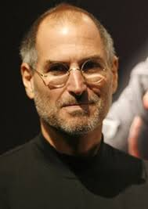

Bill Gates, cujo nome completo é William Henry Gates III, nasceu em 28 de outubro de 1955, em Seattle, nos Estados Unidos. Desde jovem demonstrou interesse por computadores e tecnologia, e ainda adolescente começou a programar. Em 1975, abandonou a Universidade de Harvard para fundar a Microsoft ao lado de seu amigo Paul Allen. A empresa cresceu rapidamente e se tornou líder mundial em software, principalmente com o lançamento do sistema operacional Windows. Durante anos, Gates foi considerado o homem mais rico do mundo. Em 2000, deixou a liderança da Microsoft para se dedicar à filantropia com a Fundação Bill & Melinda Gates, que atua em áreas como saúde, educação e combate à pobreza. Ele também é conhecido por incentivar outros bilionários a doarem suas fortunas. Gates foi casado com Melinda French Gates, com quem teve três filhos, e se divorciou em 2021. Mesmo fora da Microsoft, continua sendo uma figura influente na tecnologia e em questões sociais globais.

Steve Jobs nasceu em 24 de fevereiro de 1955, em San Francisco, Califórnia. Foi adotado por Paul e Clara Jobs e cresceu em Cupertino. Desde jovem se interessava por eletrônica e, ainda no colégio, conheceu Steve Wozniak. Em 1976, juntos fundaram a Apple na garagem dos pais de Jobs, lançando o Apple I e depois o Apple II, que revolucionaram os computadores pessoais. Jobs era conhecido por sua visão inovadora e perfeccionista. Após divergências internas, saiu da Apple em 1985 e fundou a NeXT, além de comprar a Pixar, que mais tarde se tornou um grande estúdio de animação. Em 1997, retornou à Apple, que estava em crise, e liderou uma das maiores viradas da história da tecnologia com produtos como o iMac, iPod, iPhone e iPad. Jobs transformou várias indústrias — tecnologia, música, telefonia e cinema — com seu foco em design e experiência do usuário. Em 2003, foi diagnosticado com câncer e lutou contra a doença por vários anos. Faleceu em 5 de outubro de 2011, aos 56 anos, deixando um enorme legado como um dos maiores inovadores da era digital.

Linus Torvalds nasceu em 28 de dezembro de 1969, em Helsinque, na Finlândia. Desde pequeno se interessou por computadores e programação. Durante a faculdade, começou a trabalhar em um projeto pessoal que viria a se tornar o Linux, um sistema operacional de código aberto. Em 1991, ele publicou a primeira versão do kernel Linux na internet, convidando outros programadores a contribuírem. O Linux cresceu rapidamente e se tornou a base de muitos sistemas no mundo, desde servidores e supercomputadores até celulares Android. Torvalds nunca teve a intenção de criar um império comercial, mas sim um software colaborativo, livre e acessível a todos. Apesar de não ser tão conhecido do grande público como Bill Gates ou Steve Jobs, Linus é uma figura extremamente influente no mundo da tecnologia. Ele continua a supervisionar o desenvolvimento do kernel Linux até hoje, e é respeitado por sua dedicação à qualidade e à liberdade do software.